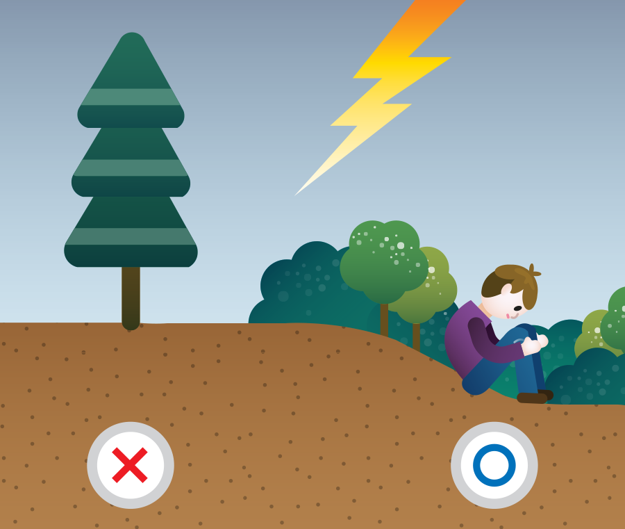

견고한 건물의 실내, 자동차 안이 안전합니다. 헛간이나 원두막처럼 평평한 지대에 단 하나뿐인 구조물은 피해야 합니다.
번개가 칠 때는 키 큰 나무, 탑처럼 높고 길쭉한 것들로부터 멀리 떨어져야 하고, 오토바이, 자전거, 카트, 골프 클럽 같은 금속물을 만지면 안됩니다.
큰 나무 아래로 대피하지 말고, 작은 나무나 수풀이 빽빽한 곳에 쪼그려 앉아 몸이 지면에 닿는 면적을 최소화해야 합니다. (땅에 납작 엎드리지 마세요.)

평평하고 트인 곳보다는 낮고 우묵한 곳이 안전합니다. 그러나 번개가 친 다음에는 보통 폭우가 내리므로, 침수되기 쉬운 계곡이나 저지대에서는 번개가 잦아드는 대로 서둘러 빠져 나와야 합니다.
실내에서도 창문과 현관에서 떨어진 안쪽에 있는 것이 좋습니다. 콘크리트 바닥에 눕거나 벽에 기대지 않도록 합니다.
통신선, 안테나, 전선을 따라 외부에서 건물 안으로 서지 전류가 유입될 수 있으므로, 유선 전화 및 유선 전원에 연결된 가전제품을 만지지 말아야 합니다.
번개가 그친 후에도 가능한 오래 배관에 손대지 않는 것이 좋습니다. 수도관에 전류가 남아 흐를 수 있으므로, 번개가 친 다음 바로 수도꼭지를 틀거나 샤워를 하지 않도록 합니다.